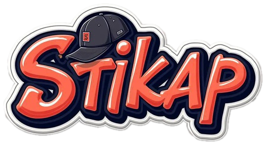
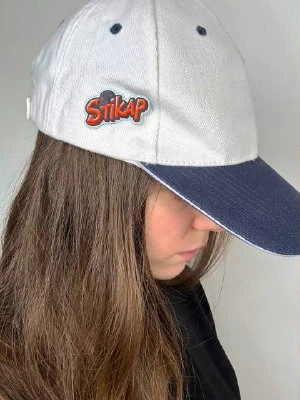
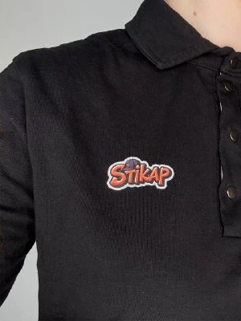
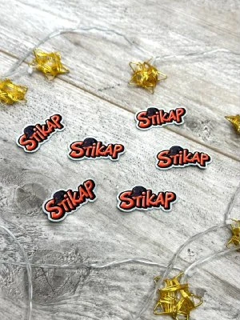
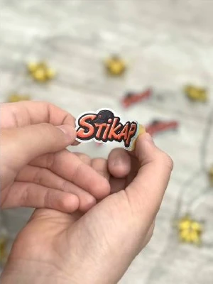

100%
ТВОЯ ИДЕЯ
Фото друга? Любимый мем? Свой рисунок? Дизайн начинается с того, что нравится тебе.
НИКАКИХ ШАБЛОНОВ
СНИМАЕМ ЗАЩИТНЫЙ СЛОЙ ↗Твои фото, мемы, персонажи и идеи — теперь в формате стикеров для одежды. Придумай. Приклей. Выделяйся.
Надоели одинаковые вещи? Не меняй гардероб. Поменяй настроение.
Stikap превращает твою картинку или идею в настоящий стикер для одежды. Прикрепи его туда, где хочешь, а когда захочется чего-то нового — переклей.
ОКЕЙ, ХОЧУ ТАКОЙ ↗

Четыре причины освободить место на любимой вещи.
Фото друга? Любимый мем? Свой рисунок? Дизайн начинается с того, что нравится тебе.
НИКАКИХ ШАБЛОНОВСтикеры создаются для вещей, а не для экрана телефона. На футболке, поло или кепке — выбираешь ты.
НОСИ С СОБОЙНе хочется оставлять стикер на одном месте? Его можно аккуратно отклеить и разместить по-другому.
МЕНЯЙ ПРАВИЛАВыбирай габариты и сразу смотри предварительную цену в нашем конструкторе.
ОТ 30 ₽ / СМ²Реальные примеры Stikap.
Представь здесь свою идею.


Скоро здесь появятся настоящие отзывы покупателей. Никаких выдуманных цитат — только реальные впечатления.
ПОДЕЛИТЬСЯ ОТЗЫВОМ ↗Загрузи фото, вырежи нужный объект, покрути стикер в 3D и узнай стоимость. А сам редактор тоже можно отклеить!
Выдели, что останется на наклейке. Остальное станет прозрачным.
Проведи кистью по фото, чтобы вернуть недостающий участок или удалить лишний. Работает мышью и пальцем.
ИИ попробует выделить человека автоматически. Если нужно, поправь края кистью.
ИИ выделяет только людей и не всегда точно обрабатывает волосы. При первой обработке нужна сеть для модели; фото остаётся в браузере. Точки, рисование и кисть работают без сети.
Сначала загрузи фото, затем вырежи стикер удобным способом.
Цена считается по прямоугольным габаритам и уточняется менеджером. Доставка рассчитывается отдельно.
При переходе параметры заказа копируются. Картинку нужно будет прикрепить менеджеру в чате.
Выбери картинку, фото или просто опиши идею.
↗Отправь задумку менеджеру, обсуди детали и размер.
↗Мы изготовим стикер по согласованному макету.
↗Добавь свой акцент на любимую вещь.
↗Не нашёл ответ? Просто напиши нам — поможем разобраться.
СПРОСИТЬ МЕНЕДЖЕРА ↗Да. Пришли фото, иллюстрацию или опиши задумку менеджеру. Поможем подготовить макет.
Да, это одна из особенностей стикеров Stikap. Аккуратно отклеивай и переноси. Результат зависит от материала одежды и условий использования.
В конструкторе укажи ширину и высоту в сантиметрах. Ориентировочная цена — 30 ₽ за 1 см²: ширина × высота × 30. Финальную стоимость уточнит менеджер.
Расскажи менеджеру, сколько стикеров тебе нужно: обсудим детали индивидуально.
Способы, стоимость и сроки доставки уточняются при оформлении заказа в Telegram.
Вещи не обязаны быть скучными.
Сделай стикер, который говорит за тебя.